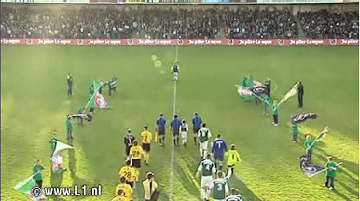
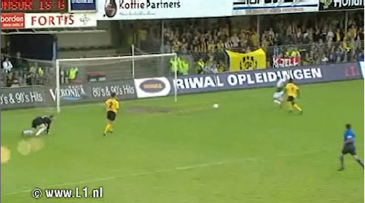
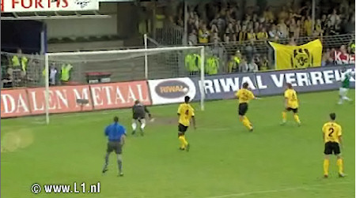
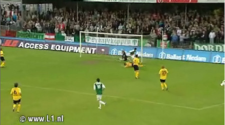
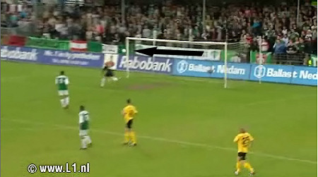
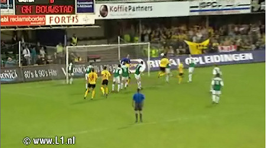
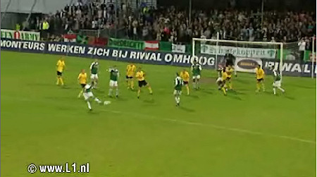

Uitverkocht huis in Dordrecht.

Al snel een prima kans voor Kalisse. Roda komt met de schrik vrij.

Vander Sloot schiet de bal over Castro en raakt de paal. De bal kaatst terug
waarna Castro alsnog kan redden.

Castro redt op schot Lopes.

Alweer een bal op de paal. Roda ontsnapt aan een achterstand.

De Wree kopt uit een hoekschop op de paal. De bal belandt vervolgens voor de
voeten van Kah die simpel kan intikken: 1-0, (73').

Vlak voor tijd knalt Kalisse met een van richting veranderd schot de
gelijkmaker binnen: 1-1, (86').